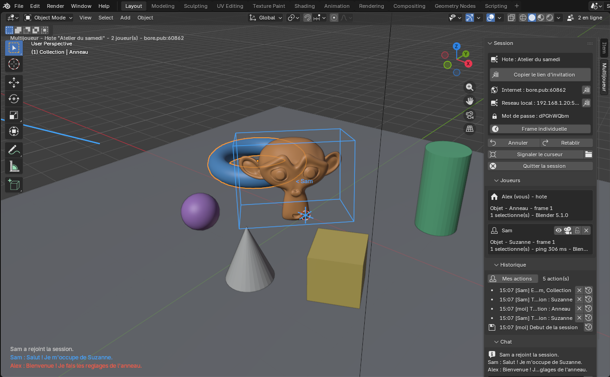

Blender Multiplayer
Éditez la même scène Blender à plusieurs, en temps réel, même sans être sur le même réseau.

Installer avec les mises à jour automatiques (recommandé)
- Blender › Edit › Preferences › Get Extensions › menu Repositories › + › Add Remote Repository.
- Coller cette adresse et cocher Check for Updates on Startup :
https://lburdier.github.io/blender-multiplayer/index.json
- Chercher Blender Multiplayer dans Get Extensions › Install.
Installé depuis le .zip, l'addon vérifie aussi lui-même les nouvelles versions au démarrage et se met à jour tout seul (réglable dans ses préférences).
Jouer
- Vue 3D › touche N › onglet Multijoueur.
- L'hôte clique Héberger puis Copier le lien d'invitation et l'envoie (Discord, mail…).
- L'invité copie le lien et clique Rejoindre avec le lien copié. C'est tout : pas de VPN, pas de port à ouvrir.